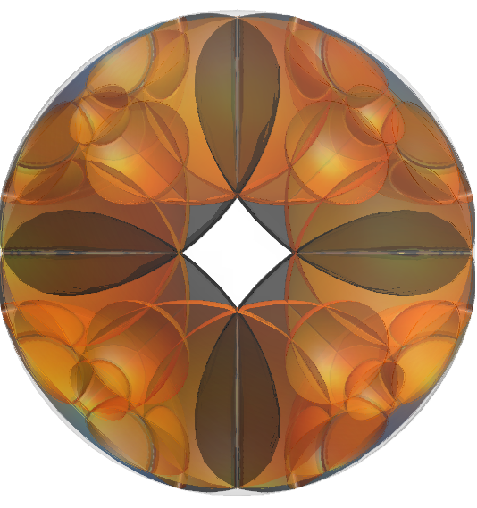
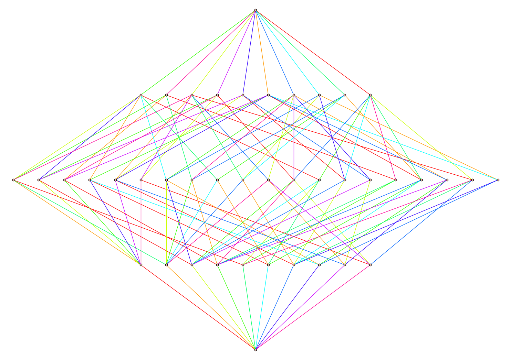

Sean O'Brien
2812920O@student.gla.ac.uk
PhD student at the Department of Mathematics and Statistics,
University of Glasgow
Links:
GitHub
I am a first year mathematics PhD supervised by Rachael Boyd and Jim Belk. I am a part of the Algebra Geometry and Quantum centre for doctoral training at Glasgow, which is funded by the EPSRC.
My research interests include group theory, geometric group theory and algebraic topology, with focus on Artin and Coxeter groups.
I am currently working on the isomorphism problem between Artin and Dual Artin Groups.

